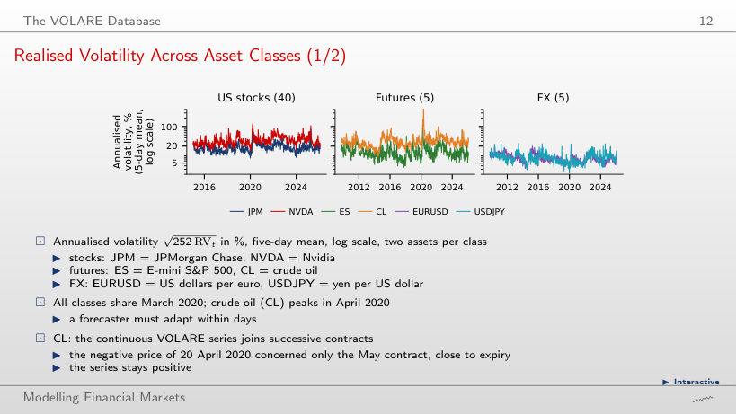
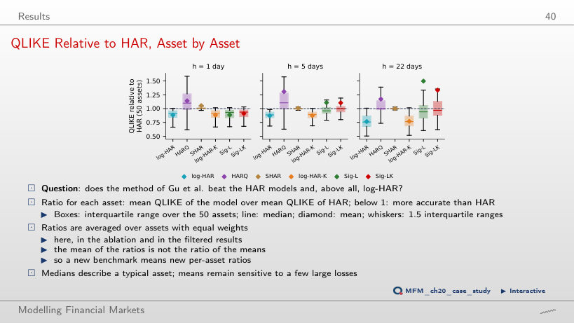
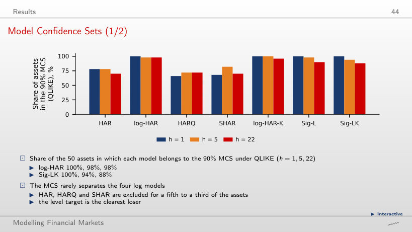
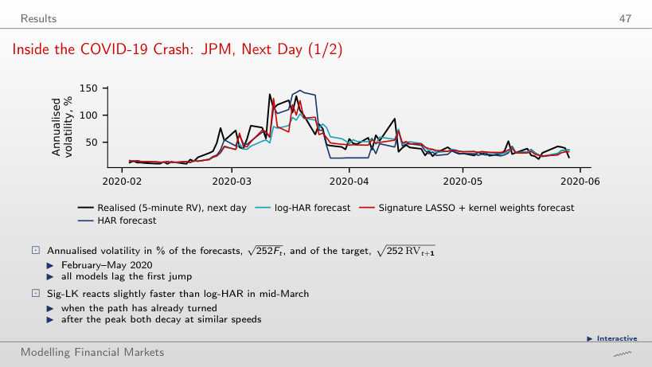
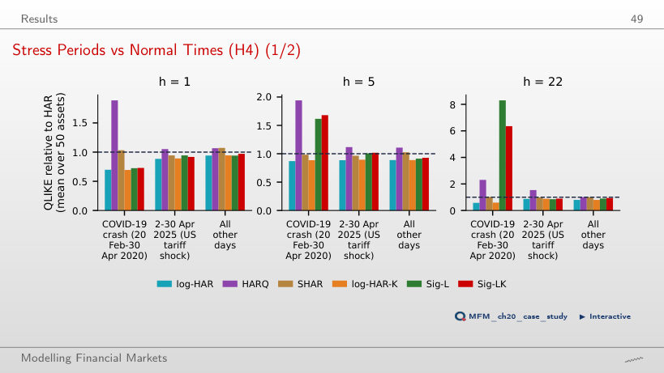
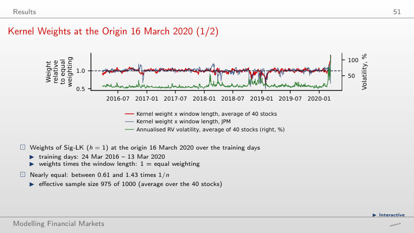
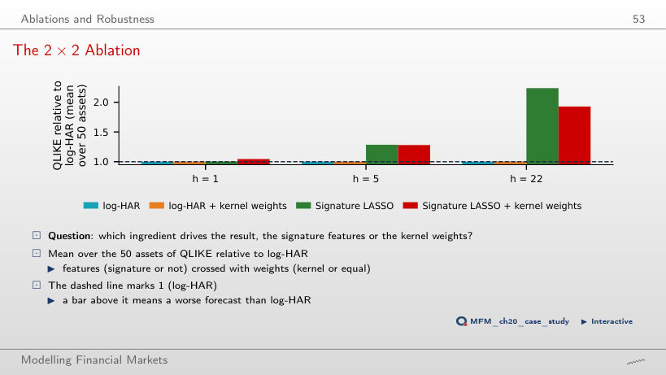

The slide of the lecture is on the left, the same figure on the right, computed in the browser from the same data. The ▶ button moves the parameter step by step.
The VOLARE Database · Results · Ablations and Robustness
The VOLARE Database
Realised Volatility Across Asset Classes

Answer
In futures. The five-day mean of the annualised volatility of crude oil (CL) reaches 458% in the five days ending 22 April 2020, and that of ES 115% in March. Among stocks, JPM reaches 111% and NVDA 118%, while EURUSD and USDJPY stay near 20%. The median volatility per class is 17.1% for stocks, 19.7% for futures and 7.3% for FX.
Results
QLIKE Relative to HAR, Asset by Asset

Answer
No. The mean ratio to HAR is 0.883 for log-HAR, 0.885 for log-HAR-K and 0.886 for Sig-L. Relative to log-HAR, Sig-L loses 0.4% and Sig-LK 4.5%. At h = 5 and 22 the Sig-LK medians (0.997 and 0.968) are far below the means, so a few assets pull the mean up.
Model Confidence Sets

Answer
log-HAR: 100%, 98% and 98% at h = 1, 5 and 22; Sig-LK: 100%, 94% and 88%. The four log models are rarely separated, while HAR, HARQ and SHAR are excluded for a fifth to a third of the assets. Under MSE almost every model stays in the set.
Inside the COVID-19 Crash: JPM, Next Day

Answer
None anticipates the first jump. Sig-LK reacts slightly faster than log-HAR in mid-March, once the path has already turned. HAR in levels overshoots the target, then turns negative in late March, and the positivity rule replaces it by the in-sample mean.
Stress Periods vs Normal Times (H4)

Answer
No. At h = 1, in the COVID-19 crash, log-HAR has 0.70 and Sig-LK 0.73 of the HAR loss, and on the other days 0.94 and 0.97. At h = 22, in the same crash, Sig-LK has 6.35 times and Sig-L 8.30 times the HAR loss.
Kernel Weights at the Origin 16 March 2020

Answer
Very little: with c = 0.5 the average weight over the 40 stocks stays between 0.61 and 1.43 times 1/n, and the effective sample size is 975 of 1000. The highest weights go to the last days before the origin, whose 22-point windows overlap the current window. The correlation of the weights with log volatility is +0.04.
Ablations and Robustness
The 2 × 2 Ablation

Answer
The weights alone (log-HAR-K) change nothing: 1.002, 1.002 and 1.004 relative to log-HAR. The features alone (Sig-L) worsen the long horizons: 1.004, 1.285 and 2.238. Both (Sig-LK): 1.045, 1.280 and 1.929. At h = 1 the loss comes mainly from crude oil (CL, ratio 2.71): without CL, Sig-LK has 1.011.
Realised variance from the VOLARE database (Cipollini et al., 2026): 40 US stocks (2015–2026), 5 futures and 5 currency pairs (2009–2026), five-minute returns. VOLARE data are licensed for research use and are not redistributed; only summaries appear here: per-asset mean losses and MCS p-values, kernel weights and distances, five-day means of the volatility of the six assets on the slide (one value per week), and the JPM forecasts of February–May 2020.